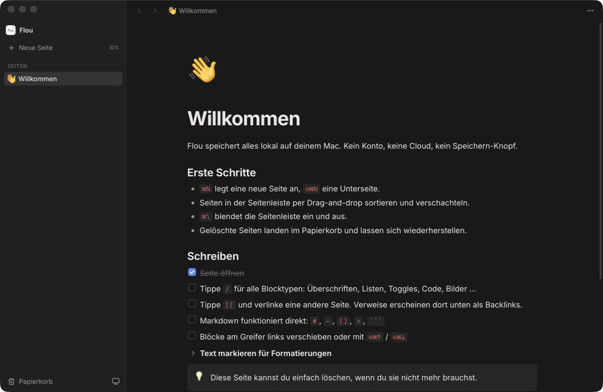
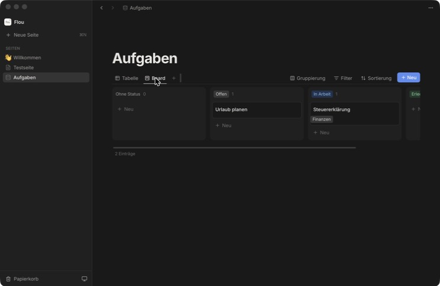
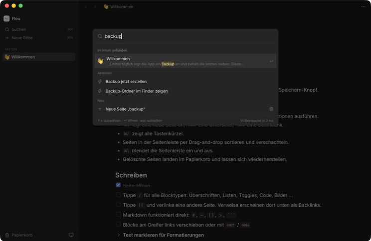

Block-Editor
Überschriften, Listen, To-dos, Toggles, Callouts, Code mit Highlighting, Tabellen, Spalten, Bilder und Dateien. Tippe / für alles.
flou ist schneller und ruhiger als Cloud-Tools: Seiten, Blöcke, Datenbanken, Volltextsuche. Kein Konto, keine Cloud, keine Telemetrie. Kostenlos.

Überschriften, Listen, To-dos, Toggles, Callouts, Code mit Highlighting, Tabellen, Spalten, Bilder und Dateien. Tippe / für alles.
#, -, [], > und ``` werden sofort zu Blöcken. Fett, kursiv, Links und Hervorhebungen direkt per Kürzel.
Tabelle, Kanban-Board, Kalender, Galerie und Liste. Auswahl, Datum, Relationen, Rollups und Formeln. Jeder Eintrag ist eine eigene Seite.
Unendliche Fläche mit Sticky Notes, Formen, Pfeilen und Freihand-Zeichnen. Direkt in Seiten einbettbar.
Claude schreibt um, fasst zusammen, macht aus einer PDF ein Board im Miro-Stil und beantwortet Fragen zu deinen Notizen. Vor jeder Aktion siehst du, was sie kostet. Kein Abo: du zahlst nur, was du nutzt, direkt bei Anthropic.
Lade Personen per Link zu einzelnen Seiten, Boards oder Datenbanken ein. Live mit Cursorn, im Browser oder in flou. Dein Computer ist der Server, nichts landet in einer fremden Cloud.
QR-Code scannen, zum Home-Bildschirm hinzufügen: dein ganzer Workspace live auf dem iPhone. Ohne App Store, ohne Cloud – dein Computer ist der Server.
⌃⌥N öffnet von überall eine Schnellnotiz, „Heute“ legt die Tagesnotiz an, Vorlagen für Meetings, Projekte und Aufgaben sind dabei.
Mit [[ auf andere Seiten verweisen. Backlinks zeigen, wer auf eine Seite zeigt.
⌘K bzw. Strg+K durchsucht Titel, Inhalte und Datenbank-Werte in Millisekunden und führt jeden Befehl aus.
Jede Kernaktion hat ein Kürzel; ⌘/ bzw. Strg+/ zeigt sie alle. Auf dem Mac mit ⌘, unter Windows mit Strg.
Alles liegt in einer SQLite-Datei auf deinem Computer. Tägliche Backups, Versionsverlauf, Export als Markdown oder PDF.
Ruhiges Design mit viel Weißraum, folgt dem System oder deiner Wahl.
Kein Login, kein Abo, kein Tracking. Netzwerk nur für die abschaltbare Update-Prüfung bei GitHub, wenn du teilst für den Tunnel zu deinen Gästen und wenn du selbst eine KI-Aktion startest.


Warum die Sicherheitsmeldungen? flou ist kostenlos und deshalb nicht kostenpflichtig bei Apple bzw. Microsoft signiert. Der Quellcode ist offen auf GitHub einsehbar.
Mac: ~/Library/Application Support/app.flou.desktop/, Windows: %APPDATA%\app.flou.desktop. Dort liegen Datenbank, Bilder und Backups. Nichts verlässt deinen Computer.
Automatisch: flou meldet neue Versionen beim Start, ein Klick auf „Aktualisieren“ genügt. Deine Daten bleiben erhalten.
Unten in der Seitenleiste auf „Teilen“ klicken und „Teilen starten“ wählen. Person einladen, auf einer Seite oben rechts „Teilen“ öffnen und Lese- oder Schreibrecht vergeben, dann den Link schicken. Gäste brauchen kein Konto und keine Installation: der Link öffnet sich im Browser. Wer selbst flou nutzt, öffnet ihn mit ⌘K → „Geteilten Workspace öffnen“. Die Verbindung läuft über einen kostenlosen Cloudflare-Tunnel; deine Daten bleiben auf deinem Computer. Solange flou bei dir offen ist, können alle mitarbeiten.
Ja, als Web-App: In flou ⌘, → „Meine Geräte“ → „iPhone verbinden“, den QR-Code mit der Kamera scannen und in Safari „Zum Home-Bildschirm“ wählen. Das iPhone zeigt dann deinen ganzen Workspace, live abgeglichen. Voraussetzung: flou läuft auf deinem Computer und teilt.
flou selbst bleibt kostenlos. Für die KI trägst du unter ⌘, → „KI“ einen eigenen API-Schlüssel von Anthropic ein und zahlst nur, was du verbrauchst. Grob: einen Absatz umschreiben kostet mit Haiku unter 0,001 $, mit Opus etwa 1 Cent; eine 15-seitige PDF als Board mit Opus etwa 20 bis 30 Cent. Vor jeder Aktion zeigt flou die geschätzten Kosten für alle Modelle, in den Einstellungen siehst du, was du heute und diesen Monat ausgegeben hast, und kannst ein Monatsbudget festlegen. Ohne Schlüssel bleibt flou komplett offline.
Ja. flou läuft auf allen Macs mit macOS 13 oder neuer, mit Apple Silicon und mit Intel-Prozessor. Unter Windows auf allen 64-Bit-PCs mit Windows 10 oder 11.
Mac: flou aus Programme in den Papierkorb legen. Windows: Einstellungen → Apps → flou → Deinstallieren. Wer auch die Daten löschen will, entfernt zusätzlich den Datenordner.